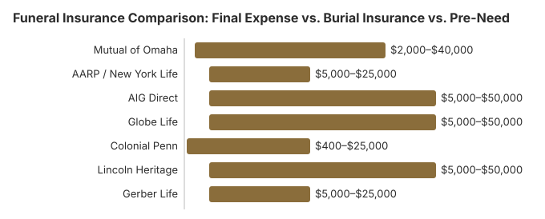

Funeral Insurance Comparison: Final Expense vs. Burial Insurance vs. Pre-Need
What this page is for. This page compares final-expense insurance, burial policies, and preneed contracts. It does not pick a company. Company notes are on best burial insurance. The vocabulary is on the funeral insurance guide. Age bands are on burial insurance for seniors. Cremation sizing is on the cremation insurance guide.
Planning ahead for funeral costs is one of the most thoughtful things you can do for your family. But the world of funeral insurance can be confusing -- final expense, burial insurance, pre-need plans -- the terminology overlaps and the sales pitches can be aggressive. This guide cuts through the noise with clear, honest comparisons so you can decide which option, if any, makes sense for your situation. Our goal is not to sell you a policy. It is to give you the information you need to make a confident, informed decision.
Disclaimer: Information only, not professional advice. Full disclaimer.
Insurance Types at a Glance
There are three main ways to pre-fund funeral expenses through insurance products. While the names are often used interchangeably in marketing, there are meaningful differences in how each works, who controls the money, and what protections you have. Insurance products are regulated at the state level by your state insurance department and the National Association of Insurance Commissioners (NAIC); preneed (pre-need) funeral trusts are additionally governed by state-level preneed statutes (for example, New York General Business Law Article 37 for NY prepaid funeral trusts).
- Final expense insurance is a small whole life policy ($5,000 to $25,000) purchased from an insurance company. The death benefit goes to your chosen beneficiary, who can use it for funeral costs or any other purpose.
- Burial insurance is functionally the same product as final expense insurance. The terms are used interchangeably in the industry. It is a whole life policy that pays your beneficiary.
- Pre-need insurance is purchased through a funeral home and is tied to a specific funeral plan. The policy pays the funeral home directly to cover the pre-arranged services.
Side-by-Side Comparison
| Feature | Final Expense / Burial Insurance | Pre-Need Plan |
|---|---|---|
| What it is | Small whole life insurance policy | Insurance policy tied to a funeral home and plan |
| Coverage amount | $5,000 – $25,000 | Matches the cost of your pre-arranged funeral |
| Who receives the payout | Your chosen beneficiary | The funeral home directly |
| How funds can be used | Any purpose (funeral, bills, debts, living expenses) | Only for the specified funeral services |
| Price lock | No, funeral costs may rise above your coverage | Yes, locks in current funeral prices (with some limitations) |
| Portability | Yes, your beneficiary can use any funeral home | Limited: tied to a specific funeral home; transferring can be complicated |
| Flexibility | High: change beneficiary anytime, beneficiary chooses how to spend | Low: locked into specific services and provider |
| Purchased from | Insurance company or agent | Funeral home (often via an insurance product) |
| Medicaid impact | May count as an asset (check your state rules) | Irrevocable pre-need plans are often Medicaid-exempt |
| What happens if you cancel | May receive cash surrender value after building equity | Depends on contract: revocable plans return funds; irrevocable may not |
Monthly Premium Ranges by Age
Your age at the time of purchase is the single biggest factor affecting your monthly premium. The earlier you buy, the lower your monthly cost. The following table shows approximate monthly premiums for a $10,000 final expense policy in 2026. Actual rates depend on your health, gender, smoking status, and the specific insurer.
| Age Bracket | Standard Issue (Healthy) | Simplified Issue | Guaranteed Issue (No Health Questions) |
|---|---|---|---|
| 50 – 54 | $25 – $45/mo | $35 – $60/mo | $55 – $90/mo |
| 55 – 59 | $35 – $60/mo | $50 – $80/mo | $70 – $120/mo |
| 60 – 64 | $50 – $85/mo | $65 – $110/mo | $90 – $160/mo |
| 65 – 69 | $65 – $110/mo | $85 – $150/mo | $120 – $210/mo |
| 70 – 74 | $80 – $150/mo | $110 – $200/mo | $160 – $280/mo |
| 75 – 79 | $110 – $200/mo | $150 – $270/mo | $200 – $350/mo |
| 80 – 85 | $150 – $300/mo | $200 – $400/mo | $280 – $500/mo |
Key takeaways from these numbers: Women typically pay 15 to 25 percent less than men. Non-smokers pay significantly less than smokers. Guaranteed issue policies -- which accept everyone regardless of health -- cost 50 to 100 percent more than standard policies because the insurer takes on more risk. If you are in reasonably good health, a standard or simplified issue policy will be your best value.
Final Expense Insurance Explained
Final expense insurance is a whole life insurance policy with a small death benefit, typically between $5,000 and $25,000. It is designed specifically to cover funeral costs and other end-of-life expenses, though the beneficiary can use the funds for any purpose. For a deeper look, see our complete final expense insurance guide.
How It Works
- You apply for a policy and pay a fixed monthly premium for the rest of your life.
- When you pass away, the insurance company pays the death benefit to your named beneficiary.
- Your beneficiary uses the funds to pay for funeral costs, outstanding bills, or any other need.
- Because it is a whole life policy, your premiums never increase and the coverage never expires as long as you keep paying.
Types of Final Expense Policies
- Level benefit (standard issue): Requires answering health questions. If approved, you receive full coverage from day one. This is the most affordable option for those who qualify.
- Simplified issue: Fewer health questions, slightly higher premiums. Most people qualify. Full or near-full coverage from day one.
- Guaranteed issue: No health questions at all. Everyone who applies is accepted. However, there is a 2 to 3 year waiting period before the full death benefit is payable. If you die during the waiting period from natural causes, your beneficiary typically receives only a return of premiums paid plus interest. Premiums are significantly higher.
Pros
- Flexibility -- your beneficiary can use the money for anything
- You choose and can change your beneficiary at any time
- Portable -- not tied to any funeral home
- Fixed premiums that never increase
- Coverage never expires
- Builds small cash value over time
Cons
- Does not lock in funeral prices -- costs may rise above your coverage amount
- Premium payments continue for life
- Guaranteed issue policies have a waiting period
- Your beneficiary could potentially use the funds for purposes other than your funeral
- If you live a long time, you may pay more in premiums than the death benefit
Burial Insurance Explained
As noted above, burial insurance and final expense insurance are the same product marketed under different names. The policy structure, coverage amounts, and terms are identical. Insurance companies and agents sometimes use one term or the other based on their target audience or marketing strategy. For more details, see our funeral insurance guide.
If you see a "burial insurance" product, evaluate it using the same criteria you would for final expense insurance: check the coverage amount, premium, policy type (level vs. graded benefit), and the insurer's AM Best rating.
Pre-Need Plans Explained
Pre-need plans are arranged and purchased directly through a funeral home. You select the specific funeral services and products you want, and the funeral home sets up a funding vehicle -- usually an insurance policy or trust -- to pay for those arrangements when the time comes. For a comprehensive look at pre-need options, see our prepaid funeral plans guide.
How It Works
- You visit a funeral home and pre-plan your funeral, selecting specific services and products.
- The funeral home calculates the total cost at today's prices.
- You fund the plan, either in a lump sum or through monthly payments via an insurance policy or trust.
- When you pass away, the funeral home provides the pre-arranged services, paid for by the plan.
- If the cost of services has increased since you purchased the plan, many (but not all) pre-need contracts guarantee the original price.
Revocable vs. Irrevocable Plans
- Revocable plans: You can cancel and receive a refund (sometimes minus a cancellation fee). However, these count as an asset for Medicaid eligibility purposes.
- Irrevocable plans: You cannot cancel or get your money back. The trade-off is that irrevocable plans are generally exempt from Medicaid asset calculations, making them a common strategy for Medicaid planning.
Pros
- Locks in current funeral prices (with many plans)
- Removes the burden of funeral planning from your family
- Irrevocable plans can help with Medicaid eligibility
- Your wishes are clearly documented and arranged in advance
Cons
- Tied to a specific funeral home -- if they close or you move, complications arise
- Less flexibility -- you are locked into specific services and products
- Irrevocable plans cannot be canceled for a refund
- The funeral home, not your family, receives the funds
- Additional services or upgrades beyond the plan are not covered
- Some plans do not fully guarantee prices or have exclusions in the fine print
Red Flags and What to Watch For
Unfortunately, funeral insurance is a market where high-pressure and sometimes predatory sales tactics exist. Here are warning signs to watch for:
- High-pressure TV and mail solicitations. "You must act now" urgency is a sales tactic, not a genuine deadline. Take your time and compare options.
- Guaranteed issue pushed when you could qualify for standard. Some agents steer healthy customers toward guaranteed issue policies because they pay higher commissions. Always ask if you qualify for a standard or simplified issue policy first -- it will be significantly cheaper.
- Premiums that exceed the death benefit. Run the numbers. If you are 75 and paying $200 per month for a $10,000 policy, you will have paid more than the death benefit in just over 4 years. Ask yourself whether a savings account might be better.
- Vague "price lock" promises on pre-need plans. Read the contract carefully. Some pre-need plans guarantee prices only for the specific items selected, not for any additional services. Others have exclusions for cemetery fees, flowers, or other costs.
- Funeral home pressure to buy pre-need. Some funeral homes push pre-need plans aggressively because they secure future business. A reputable funeral home will give you time to think and compare.
- Policies with a long graded benefit period. A 2-year waiting period is standard for guaranteed issue, but some low-quality policies extend this to 3 years or have complex partial benefit formulas. Read the terms.
- Companies with low financial ratings. Check the insurer's AM Best rating. Stick with companies rated B+ or higher to ensure they will be financially sound when your family needs to file a claim.
- Pre-need plans from financially unstable funeral homes. If the funeral home goes out of business, your pre-need plan could be at risk. Research the funeral home's reputation and longevity.
Alternatives to Funeral Insurance
Funeral insurance is not the only way to prepare for end-of-life expenses. Depending on your situation, one of these alternatives might serve you better:
- Dedicated savings account or CD: Setting aside money in a savings account or certificate of deposit gives you complete control and flexibility. If you are under 60 and in good health, you may be able to save the equivalent of a funeral fund faster than paying insurance premiums. The money earns interest and is always accessible to your family.
- Payable-on-death (POD) bank account: You can designate a beneficiary on a regular bank account so the funds transfer directly upon your death, bypassing probate. This is free to set up and gives your family immediate access to funds for funeral expenses.
- Existing life insurance: If you already have a term or whole life policy, check whether the death benefit is sufficient to cover funeral costs. Adding funeral insurance on top of an existing policy may be redundant.
- Veteran benefits: Veterans may be eligible for burial benefits through the VA, including a burial allowance, a free headstone or marker, and burial in a national cemetery at no cost. See our veteran burial benefits guide.
- Government assistance: Low-income families may qualify for state or county burial assistance, FEMA funeral assistance (in disaster situations), or Medicaid-funded burial. See our payment assistance guide for a full list of programs.
- Crowdfunding: Platforms like GoFundMe have become a common way for families to raise funds for funeral expenses. While not a pre-planning strategy, it can be a helpful backup for unexpected costs.
- Simplified, lower-cost funeral: Choosing affordable funeral options such as direct cremation (state averages of about $1,400 to $3,000) or direct burial ($1,500 to $4,000) can reduce the amount you need to set aside to a level that is manageable through savings alone.
Top Burial Insurance Companies at a Glance
If you have decided that burial or final expense insurance is the right choice for your situation, the next step is choosing a provider. The following table compares the most prominent companies in 2026. For a full, in-depth review of each company with detailed pros, cons, and premium breakdowns by age, see our Best Burial Insurance Companies comparison guide.
| Company | AM Best Rating | Coverage Range | Policy Types | Best For |
|---|---|---|---|---|
| Mutual of Omaha | A+ (Superior) | $2,000 – $40,000 | Level, Graded, Guaranteed | Best overall rates |
| AARP / New York Life | A++ (Superior) | $5,000 – $25,000 | Level, Guaranteed | AARP members |
| AIG Direct | A (Excellent) | $5,000 – $50,000 | Level, Simplified, Guaranteed | Online experience |
| Globe Life | A (Excellent) | $5,000 – $50,000 | Simplified, Guaranteed | Wide acceptance |
| Colonial Penn | A- (Excellent) | $400 – $25,000 | Guaranteed Issue Only | No health questions |
| Lincoln Heritage | A- (Excellent) | $5,000 – $50,000 | Level, Simplified, Guaranteed | Funeral planning benefit |
| Gerber Life | A (Excellent) | $5,000 – $25,000 | Level, Guaranteed | Trusted family brand |

Key takeaway: If you are in good health, Mutual of Omaha and AIG Direct typically offer the most competitive standard issue rates. If you have serious health conditions and cannot qualify for standard coverage, Colonial Penn and Globe Life offer guaranteed acceptance with no health questions -- though premiums are significantly higher. Read our complete company-by-company comparison for detailed premium tables by age and in-depth pros and cons for each provider.
Frequently Asked Questions
What is the difference between final expense insurance and burial insurance?
The terms final expense insurance and burial insurance are often used interchangeably, and for practical purposes, they are the same product. Both are small whole life insurance policies, typically ranging from $5,000 to $25,000, designed to cover funeral and end-of-life costs. The payout goes to your beneficiary, who can use it for any purpose. Some insurance agents use one term over the other for marketing reasons, but the underlying policy structure is the same.
How is pre-need insurance different from final expense insurance?
Pre-need insurance is purchased through a funeral home and is tied directly to a specific funeral plan. The policy pays the funeral home directly upon your death, covering the pre-arranged services. Final expense insurance is purchased independently from an insurance company, and the payout goes to your chosen beneficiary, who decides how to use the funds. Pre-need locks in current funeral prices, while final expense provides more flexibility but does not guarantee pricing.
What is a graded benefit or waiting period in funeral insurance?
A graded benefit policy, also called a modified or guaranteed issue policy, has a waiting period of typically 2 to 3 years before the full death benefit is payable. If the insured dies during the waiting period from natural causes, beneficiaries receive only a partial benefit, often a return of premiums paid plus interest, rather than the full face value. These policies are designed for individuals who cannot qualify for standard coverage due to serious health conditions. They cost more per dollar of coverage than standard policies.
Can I be denied funeral insurance because of my health?
It depends on the type of policy. Standard final expense policies involve health questions and can deny coverage based on serious conditions. Simplified issue policies ask fewer health questions and are easier to qualify for, though they may have graded benefits. Guaranteed issue policies accept everyone regardless of health, but they come with a 2 to 3 year waiting period and higher premiums. Most people, even those with some health conditions, can find coverage through one of these options.
How much does funeral insurance cost per month?
Monthly premiums for funeral insurance depend on your age, health, gender, coverage amount, and the type of policy. As a general guide for a $10,000 policy: a healthy person in their 50s might pay $30 to $60 per month, someone in their 60s might pay $50 to $100, someone in their 70s might pay $80 to $180, and someone in their 80s might pay $150 to $300 or more. Women typically pay less than men for the same coverage. Guaranteed issue policies cost significantly more than standard policies.
Is funeral insurance worth it?
It depends on your individual circumstances. Funeral insurance can be worth it if you want to ensure your family is not burdened with funeral costs, if you do not have other savings or life insurance to cover these expenses, or if you want to know arrangements are already funded. However, if you are relatively young and healthy, a dedicated savings account or a standard term life insurance policy may be more cost-effective. If you already have life insurance or significant savings, additional funeral insurance may be unnecessary.
What happens if I stop paying funeral insurance premiums?
If you stop paying premiums on a whole life funeral insurance policy, you will typically lose your coverage after a grace period of 30 to 60 days. However, if you have had the policy long enough to build cash value, you may have options: the insurer might apply the cash value to keep the policy in force temporarily, convert it to a smaller paid-up policy, or return the cash surrender value to you. With pre-need plans, some are revocable (you can get your money back) and some are irrevocable (the funeral home keeps the funds). Always read your policy terms carefully.
Can I change my beneficiary on a funeral insurance policy?
Yes, for standard final expense and burial insurance policies, you can change your beneficiary at any time by contacting your insurance company. Pre-need insurance is different because the beneficiary is typically the funeral home itself, since the policy is tied to a specific funeral arrangement. If you switch funeral homes, you may need to transfer the pre-need policy, which can sometimes involve penalties or loss of value depending on the contract terms and your state's regulations.
Resources That May Help
- Funeral Consumers AllianceIndependent consumer advocacy for funeral rights and fair pricing
- Parting.comCompare funeral home prices to determine how much coverage you need
- Funeral Insurance GuideIn-depth guide to understanding funeral insurance policies
- Payment Assistance GuideGovernment programs and financial help for funeral costs
Get Our Free Funeral Cost Guide
Sign up for occasional email updates on funeral insurance options and how they compare.
No spam. Unsubscribe anytime. We respect your privacy.
Sources & review: National Association of Insurance Commissioners (NAIC) complaint-index data; A.M. Best financial-strength ratings; FTC Funeral Rule (16 CFR Part 453); state preneed statutes (e.g, NY General Business Law Article 37); IRS Revenue Ruling 92-17 (preneed funeral trust earnings treatment); NFDA 2023 General Price List Study; Funeral Consumers Alliance preneed guidance. National figures updated 2026-10-02; reviewed 2026-10-22 by Paul Paradis, Founder & Editor (Boston, MA). Not licensed insurance advice.